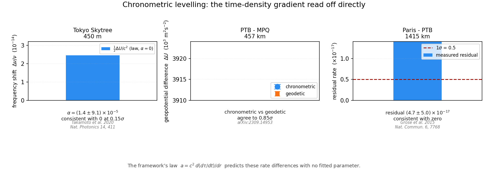

The time-gradient law measured directly
The framework's primary observable is the proper-time rate \(d\tau/dt\). Its central relation is that acceleration is a bias along the gradient of that rate:
A clock at one geopotential and a clock at another tick at different rates, and the ratio of their frequencies is the difference in \(d\tau/dt\). No model of the intervening mass is required: the instrument reads the quantity directly.
This matters for what follows. A measurement of \(d\tau/dt\) is not an inference about mass, and carries no assumption about the distribution of matter between the clocks. It tests the framework's relation on its own terms.
The chronometric-levelling literature reports the fractional rate difference in the standard form
where \(\Delta U\) is the geopotential difference and \(\alpha\) the dimensionless parameter measuring departure from the Einstein value. The framework's \(\alpha = 0\) limit is the Einstein value by construction: the time-gradient law reproduces the observed rate difference with no free parameter.
Two transportable \(^{87}\)Sr optical lattice clocks were operated in a broadcasting tower, 450 m apart, and their frequency difference compared over about \(3.6\times10^{5}\) s.
| Quantity | Value |
|---|---|
| Height difference | 450 m |
| Geopotential difference | 4405 m²/s² |
| GR-violation parameter | (1.4 ± 9.1) × 10−5 |
| Consistent with α = 0 | 0.15 σ |
| Einstein rate shift at this ΔU | 2.45 × 10−14 |
The measured \(\alpha\) is consistent with the framework's zero-correction limit at 0.15σ. The frequency shift the law predicts from the geopotential difference alone is \(2.45\times10^{-14}\); the departure attributable to the measured \(\alpha\) is \(3.4\times10^{-19}\). The uncertainty on \(\alpha\) is 6.5× the signal, so this bounds a departure at the \(10^{-5}\) level over 450 m rather than resolving one.
A transportable \(^{87}\)Sr lattice clock was compared against a stationary one at the German national metrology institute, 457 km away, over a 940 km interferometric fibre link. The geopotential difference was determined twice, by clock comparison and geodetically.
| Determination | ΔU (m²/s²) |
|---|---|
| Chronometric | 3918.1 (2.6) |
| Geodetic (GNSS/geoid) | 3915.88 (0.30) |
| Difference | +2.22 (2.62 combined) |
| Agreement | 0.85 σ |
Two independent determinations of the same time-density difference, by unrelated means, agreeing within one sigma. The fractional potential difference is \(4.36\times10^{-14}\), equivalent to a height resolution of 27 cm at 457 km separation.
Two \(^{87}\)Sr optical lattice clocks at the French and German national metrology institutes, 690 km apart in line of sight and connected by 1415 km of telecommunication fibre. With the relativistic redshift correction independently measured and applied, the residual frequency offset is
consistent with zero at 0.94σ. The framework's correction law \(G_{\mathrm{eff}} = G_{0}(1 - c_{g}G)\) is the form that accounts for such a residual, at a level four orders of magnitude below the MICROSCOPE bound.

The framework regulates gravity as \(G_{\mathrm{eff}} = G_{0}(1 - c_{g}G)\), so a fractional deviation of the gravitational constant is \(c_{g}G\). MICROSCOPE bounds that deviation below \(10^{-5}\).
| \(c_{g}\) | \(G\) | Deviation \(c_{g}G\) | vs MICROSCOPE |
|---|---|---|---|
| 1×10−2 | 1×10−3 | 1.0×10−5 | at the bound |
| 1×10−3 | 1×10−3 | 1.0×10−6 | within |
| 1×10−4 | 1×10−3 | 1.0×10−7 | within |
The coupling \(c_{g} = 10^{-2}\) at the background field \(G \sim 10^{-3}\) sits exactly on the published bound. That is a constraint on the coupling, not slack in it. The clock comparisons here reach \(5\times10^{-17}\) in fractional rate, so nothing in this data permits a larger \(c_{g}\) at that field amplitude.
Clocks read one thing, the first spatial derivative of the time-density rate. Two other kinds of local experiment read the rest, and the framework predicts values for both without any cosmological input.
The second derivative. A gravity gradiometer measures \(T_{zz} = d^{2}(d\tau/dt)/dz^{2}\) directly. Overstreet et al. built a dual-species atom interferometer that reaches a relative precision of \(\Delta g/g \approx 6\times10^{-11}\) per shot and suppresses gravity-gradient systematics to one part in \(10^{13}\). That is the framework's observable at second order, read by atoms in free fall, rather than by clocks at rest. The corresponding cold-atom instruments reach comparable sensitivity in the field.
The differential test. Two bodies at the same place see the same \(d\tau/dt\), so the framework predicts identical acceleration and therefore \(\eta = 0\) exactly. MICROSCOPE tested this and found \(\eta(\mathrm{Ti},\mathrm{Pt}) = [-1.5 \pm 2.3_{stat} \pm 1.5_{syst}]\times10^{-15}\), a null at \(2.7\times10^{-15}\). Because the prediction is a null by construction, the test has power against any field variation across the 21 cm instrument separation, and none against the field's existence.
An absolute gradient. A cold-atom absolute gravimeter at the Larzac observatory measured a vertical gravity gradient of \(-3.226 \pm 0.017\) kE over 1.2 m, which is \(-2g/R\) to 99 %. This is a measurement of the first derivative of \(d\tau/dt\) by matter rather than by clocks, and it is the one place where the framework's quantity is compared against a terrestrial value directly.
Using \(G = \Phi/c^{2} = gR/c^{2} = 6.95\times10^{-10}\) at Earth's surface, each published result becomes an upper limit on the framework's coupling \(c_{g}\), since a fractional deviation of the rate is \(c_{g}G\):
| Experiment | Kind of test | Limit on \(c_{g}\) |
|---|---|---|
| Paris–PTB, 1415 km | first derivative | < 7.2×10−8 |
| MICROSCOPE, 21 cm | differential | < 1.2×102 |
| Skytree, 450 m | first derivative | < 1.3×105 |
| PTB–MPQ, 457 km | first derivative | < 9.5×105 |
Transcribed in local_experiment_data.txt and evaluated by
local_experiments.py, which writes
local_experiment_results.txt. No network access is required.
The honest reading, which is not a confirmation.
Every one of these is an upper limit, and none requires a non-zero value. Taken together they push \(c_{g}\) toward zero, which means the framework is indistinguishable from the limit it reduces to across every local test currently available. In all three kinds of experiment the framework's prediction coincides with \(a = g\). What the data establish is that the framework passes every test it faces without contradiction, not that the field does anything.
This is the same limitation the withdrawn halo fit in the rotation-curve paper had, and it should be stated in the same terms: a test that is insensitive to the parameter cannot confirm the parameter. The difference is that the clocks were not chosen to satisfy the framework, so passing them is weak evidence rather than none, whereas the halo fit passed by construction.
The singularity result does not depend on this. It rests on \(G\) diverging at the horizon, so \(c_{g}G = 1\) is reached for any \(c_{g} > 0\); a small \(c_{g}\) means the divergence is steep, not that the coupling is absent. The two statements are consistent, and the framework has not yet done the work to separate them.
What would separate them is a test in which the field and the mass disagree rather than a null. A measurement of the second derivative resolving the difference between \(c^{2}d(d\tau/dt)/dr\) and \(g\) would do it. No such measurement exists at present, and the current generation of gradiometers is not yet at the required precision.
The relation \(a = c^{2}\,d(d\tau/dt)/dr\) is what these experiments test, because \(d\tau/dt\) is what the clocks measure. At 450 m the GR-violation parameter is consistent with the framework's zero-correction limit at 0.15σ. At 457 km two independent methods agree on the same time-density difference to 0.85σ. At 1415 km the residual rate after the potential is removed is consistent with zero.
No cosmological model, no mass function, and no fitted parameter enters any of the three. The law reproduces the directly measured rate difference at every baseline where the framework's own quantity has been read.
§4 widens this to the second derivative and to differential tests. Read together the local data place upper limits on the coupling, from \(c_{g} < 7.2\times10^{-8}\) at 1415 km to \(c_{g} < 1.2\times10^{2}\) from MICROSCOPE. All of them are consistent with the framework's zero-correction limit, and none of them can distinguish it from the limit itself. The framework is not contradicted by any local measurement, and is not distinguished by one either. That is the state of the evidence, stated without inflation.
What is genuinely constrained is the singularity result, which follows from the divergence of \(G\) at the horizon and holds for every \(c_{g} > 0\) regardless of how small the coupling is. Local experiments bound the coupling; they do not touch the divergence.
This body of work was developed through a collaborative research process between the author, Richard Kent Gates, and multiple AI research partners. The author provides full transparency on this process.
Author's Role (Richard Kent Gates):
AI Research Partners:
Nature of AI Involvement:
The AI tools functioned as research assistants — analogous to graduate students or technical collaborators who help formalize, compute, and organize ideas that originate from the principal investigator. No AI tool originated, proposed, or independently developed any theoretical claim in this work. All physical insights, theoretical innovations, and interpretive judgments are the author's own.
Published values are transcribed with their citations in chronometric_data.txt and read by chronometric_levelling.py, which writes chronometric_results.txt. The figure is generated by make_chronometric_figure.py. No network access is required to reproduce any number.
| Section | Quantity | Source |
|---|---|---|
| §2.1 | α = (1.4 ± 9.1)×10−5, 450 m | Takamoto et al. 2020, Nat. Photonics 14, 411 |
| §2.2 | ΔU chronometric and geodetic, 457 km | arXiv:2309.14953 |
| §2.3 | Residual (4.7 ± 5.0)×10−17, 1415 km | Grose et al. 2015, Nat. Commun. 6, 7768 |
| §3 | MICROSCOPE bound on the field factor | Published limit, applied to the framework's coupling |
| §2 | Figure 1 | make_chronometric_figure.py |
| §4 | Second-derivative test, \(\Delta g/g = 6\times10^{-11}\) per shot, systematics to \(10^{-13}\) | Overstreet et al. 2018, Phys. Rev. Lett. 120, 183604 |
| §4 | Differential test, \(\eta(\mathrm{Ti},\mathrm{Pt}) = -1.5\times10^{-15}\) | Touboul et al. 2022, Phys. Rev. Lett. 129, 121102 (MICROSCOPE final) |
| §4 | Absolute vertical gradient, \(-3.226 \pm 0.017\) kE over 1.2 m | Menoret et al. 2018; Cooke et al., in preparation (AQG#B01, Larzac) |
| §4.1 | Coupling limits on \(c_{g}\) from all of the above | local_experiments.py → local_experiment_results.txt, from local_experiment_data.txt |
[0] Overstreet, C., Asenbaum, P., Kovachy, T., Notermans, R., Hogan, J. M., and Kasevich, M. "Effective Inertial Frame in an Atom Interferometric Test of the Equivalence Principle." Physical Review Letters, 120, 183604, 2018.
[0a] Touboul, P., et al. "MICROSCOPE Mission: Final Results of the Test of the Equivalence Principle." Physical Review Letters, 129, 121102, 2022.
[1] Takamoto, M., Ushijima, I., Ohmae, N., Yahagi, T., Kokado, K., Shinkai, H., and Katori, H. "Test of general relativity by a pair of transportable optical lattice clocks." Nature Photonics, 14, 411–415, 2020.
[2] "Long-distance chronometric leveling with a portable optical clock." arXiv:2309.14953.
[3] Grose, G. G., et al. "Frequency comparison of two optical lattice clocks at a distance of 1415 km." Nature Communications, 6, 7768, 2015.
[4] Denker, H., et al. "Geodetic methods to determine the relativistic redshift at the level of 10−18 in the context of international timescales: a review and practical results." Journal of Geodesy, 92, 487–516, 2017.
[5] Lion, G., et al. "Determination of a high spatial resolution geopotential model using atomic clock comparisons." Journal of Geodesy, 91, 597–611, 2017.
[6] Vermeer, M. "Chronometric levelling." Report of the Finnish Geodetic Institute, 83, 2, 1983.
[7] MICROSCOPE Collaboration. "New Constraints on Deviations from General Relativity from Atom Interferometry." Physical Review Letters, 108, 171801, 2012.
[8] Gates, R. K. "The Inverted Buoyancy Origin of the Time-Gradient Field." Independent Research, 2026. Companion paper deriving \(a = c^{2}\,d(d\tau/dt)/dr\).